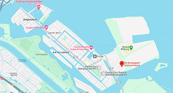

De Bouwgaard ligt op Centerumeiland op IJbrug.
De Bouwgaard is een tijdelijke buurttuin van Centrumeiland. Buren kunnen hier elkaar ontmoeten en tuinieren. De Bouwgaard is een initiatief van het projectteam centrumeiland van de gemeente Amsterdam en de bewoners.
Het idee van de Bouwgaard was van de bewoners en met de hulp van de gemeente is het gemaakt. De gemeente Amsterdam heeft het terrein, de picknickbanken, de hekken en een startbudget klaar gezet voor de bewoners.